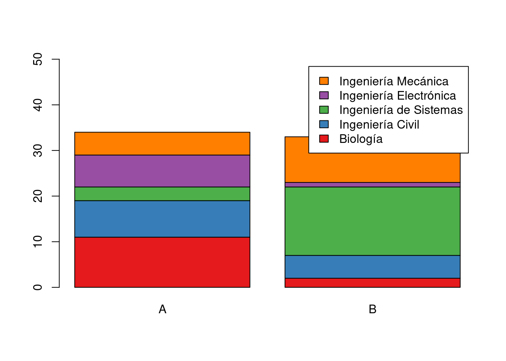
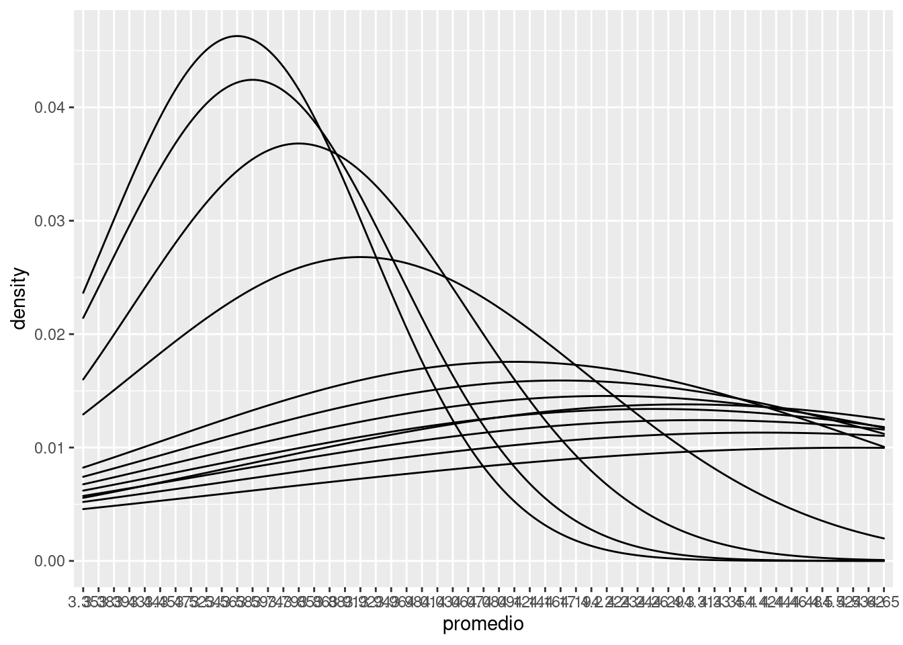
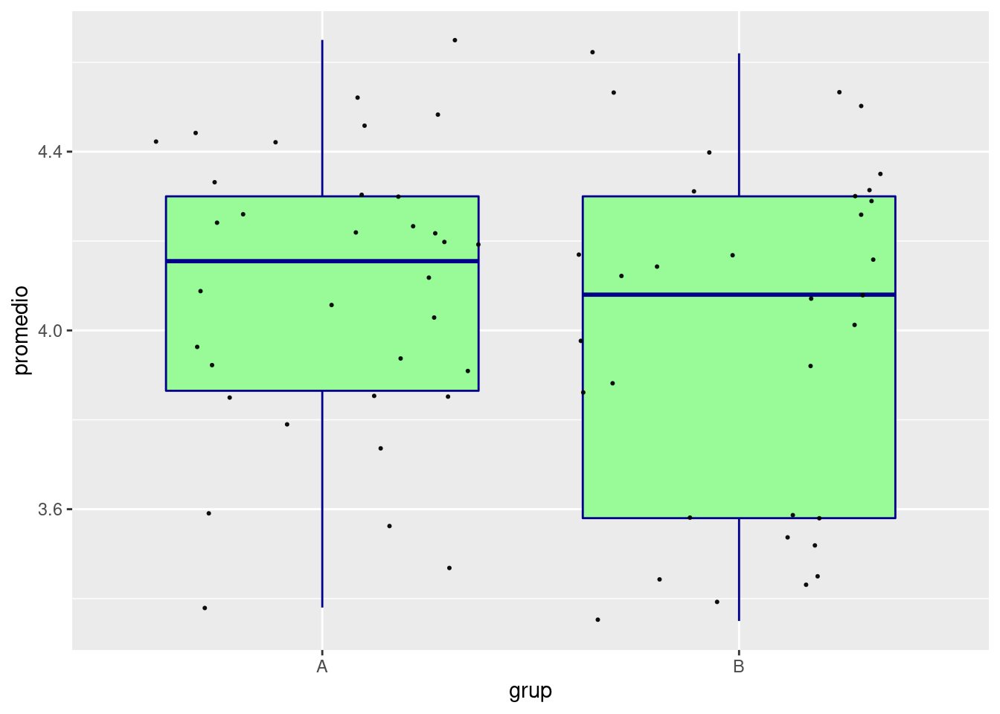
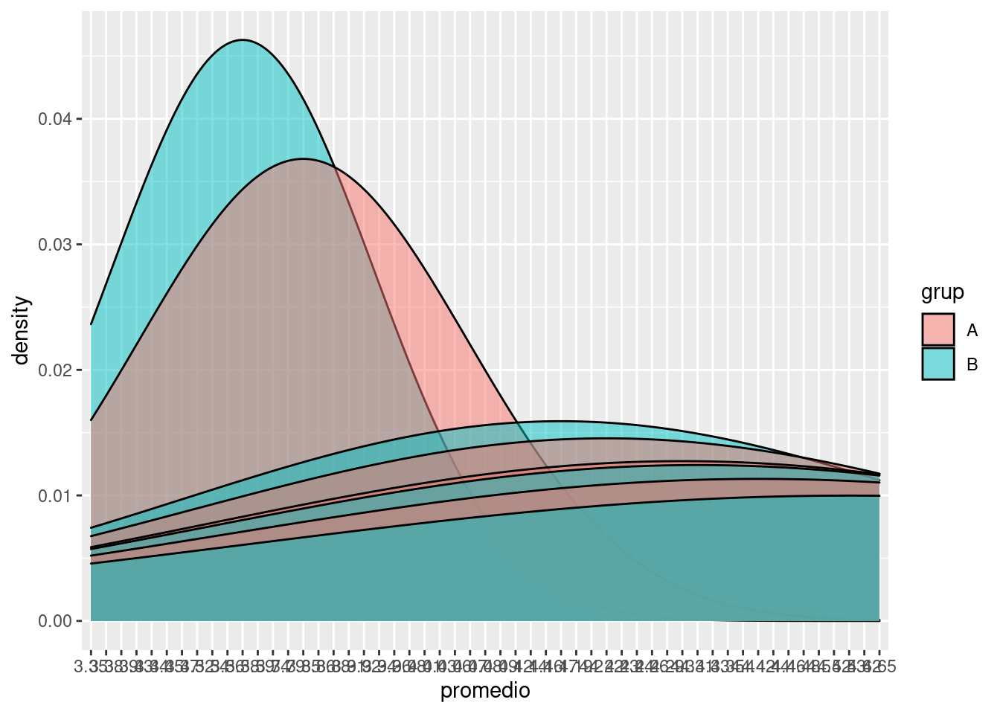
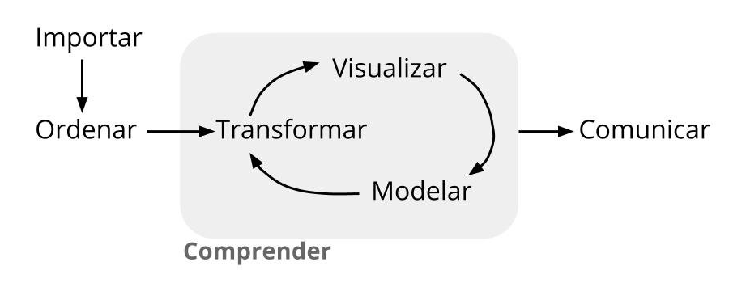

Bases de datos
Módulo 1- Unidad 1.1
dgonzalez
Guía de aprendizaje 1.1

1. Introducción
En esta unidad se presenta la Metodología Estadística como estrategia que permite visualizar las diferentes etapas presentes en una investigación o análisis de datos :
- Definición del problema
- Definición de los objetivos
- Definición de las variables de interés
- Diseño del experimento
- Recolección de la información
- Procesamiento de información
- Análisis descriptivo
- Inferencia estadística
- Recomendaciones y conclusiones
Haciendo especial referencia a la construcción, depuración y documentación de las bases de datos, acciones necesarias para un buen análisis de datos.
Con este ropósito se hará uso del portal Bases de Datos Abiertos Colombia, de la hoja electrónica Excel y del lenguaje R.
2. Objetivos de la unidad
Al finalizar la unidad los estudiantes estarán en capacidad de RECONOCER los pasos de la Metodología Estadística y podrán ESTRUCTURAR, LIMPIAR y DOCUMENTAR una base de datos con el fin de garantizar los elementos necesarios para realizar un procesamiento de datos. Para ello seleccionaran una base de datos del portal de Datos Abiertos Colombia. Adicionalmente propondrán un problema que les permita el desarrollo de la metodológica estadística.
3. Duración
La presente unidad será desarrollada durante la primera semana del semestre ( 24 al 30 enero de 2022). Ademas del material suministrado se podrá contar con el acompañamiento del profesor en tres sesiones (Lunes, Miércoles y Viernes) y de un monitor. Los documentos requeridos para esta unidad deberán ser entregados a través de la plataforma Brightspace hasta el 30 de enero.
Para alcanzar los objetivos planteados se propone realizar las siguientes actividades:
4. Cronograma de trabajo
| Actividad101 | Descripción |
|---|---|
| Individual | Metodología estadística: : Formular un problema que le permita desarrollar un ejercicio académico durante el semestre a través de la recolección de información (primaria o secundaria), Ademas de establecer los objetivos y las variables de interés asociadas en dicho problema e identificar el tipo de variable y su escala de medición. El resultado de esta actividad deberá se entregado en archivo pdf con nombre: actividad101.pdf en enlace ubicado en la plataforma Bs |
| Recursos | Metodología |
| Fecha | 30 de enero de 2022 |
| Hora | 23:59 |
| Actividad102 | Descripción |
|---|---|
| Individual | Base de datos : Cada estudiante deberá buscar una base de datos de su interés, depuarla y documentarla si es necesario. A partir de la información recolectada deberá construir la ficha técnica de la base. El resultado de esta actividad deberá se entregado en archivo pdf con nombre: actividad102.pdf |
| Recurso | Video: Como descargar datos abiertos |
| Formato ficha : Ficha técnica | |
| Excel | |
| RStudio | |
| Fecha | 30 de enero 2022 |
| Hora | 23:59 hora local |
| Actividad103 | Descripción |
|---|---|
| Individual | Instalación de R y RStudio : Para el desarrollo de las actividades del curso deberán instalar R CRAN y RStudio. Para su correcta instalación existen varios videos en YouTube que le permitirán realizarlo de una manera correcta |
| Recursos | DESCARGAR e instalar R y RStudio 2021 -Video Rafa Gonzalez Gouveia |
| R download | |
| RStudio download | |
| Fecha | 30 de enero 2022 |
| Hora | 23:59 hora local |
5. Criterios de evaluación
Reconocer la relación existente ente la definición del problema, el planteamiento de los objetivos y la definición de las variables de interés dentro de la Metodología Estadística.
Reconocer e identificar los diferentes tipos de variables y sus respectivas escalas de medición.
Identificar la estructura de una base de datos
Los entregables completos y enviados dentro de los tiempos establecidos otorgarán 25 puntos por la actividad101 y 25 puntos por la actividad102, para un total de 50 puntos.
6. Entregables
| Entregable | Descripción |
|---|---|
| actividad1.pdf | Documento que contenga: Formulación de problema propuesto, definición de los objetivos y definición de variables de interés. En este último caso detallar para cada variable su tipo ( cualitativa o cuantitativa ) y su escala de medición ( nominal, ordinal, de intervalo o de razón). |
| actividad2.pdf | Ficha técnica de la base seleccionada |
| Fecha | 30 de enero de 2022 |
| Hora límite | 23:59 hora local |
Recursos
Con el fin de tener una idea inicial del propósito de este módulo, se presenta información relacionada con los estudiantes que toman el curso utilizando para ello gráficos e indicadores estadísticos, los cuales podremos interpretar al finalizar el módulo.
1. Grupos 2022- 1




2. Metodología estadística
Una forma de abordar el curso de Probabilidad y Estadística e mediante la metodolgía estadística, que al igual que el método cientifico está conformada por una serie de etapas que van desde la definición del problema hasta la escritura del informe final con las conclusiones y recomendaciones.
1. Definición del problema
2. Definición de los objetivos
3. Definición de las variables de interés
4. Diseño del experimento
5. Recolección de la información
6. Procesamiento de los datos
7. Análisis descriptivo
8. Inferencia estadística
9. Conclusiones y recomendacionesLa descripción de cada una de ellas se presenta a continuación:
1. Planteamiento del problema
El planteamiento del problema puede tener varios orígenes, entre los cuales podemos mencionar:
- Inquietud personal por resolver un problema
- Lluvia de ideas de un grupo de personas
- Solicitud realizada por entidad regional, empresa o persona
Se recomienda en este caso iniciar con una revisión bibliográfica que permitan a los interesados buscar grupos de personas que enfrentan problemas similares, que tipo de soluciones ha propuesto o están implementando. Es posible que el problema al que nos enfrentamos ya tenga una buena solución y por tanto no tendría sentido destinar una serie de recursos para estudiar lo que ya otros tienen solucionado.
En caso de tratarse de un problema con cierta frecuencia pero con características muy particulares, es necesario además de la revisión bibliográfica determinar:
- Antecedente
- Preguntas de investigación
- Hipótesis de investigación / Preguntas de investigación
- Justificación del estudio
- Delimitación del problema
Ejemplos de problemas:
- Aumento de embarazo de adolescentes en Colombia
- Incremento de fugas de energía eléctrica en la ciudad
- Incremento de la tasa de empleo informal
- Incremento de incapacidades causadas por accidentes automovilísticos
- Aumento del tiempo de atención al cliente
- Aumento de quejas por prestación de servicios
- Aumentó corrupción en Colombia, según Transparencia Internacional
- Disminución de la demanda de educación en el área de las ingenierías
2. Definición de los objetivos
Al iniciar una investigación uno de los primeros pasos debe ser el definir de la forma más clara el propósito u objetivo principal del estudio. Estos deben de estar orientados a la solución del problema
Los objetivos pueden ser:
- Generales: definen a grandes rasgos el propósito del trabajo de investigación.
- Específicos: definen en detalle los fines de la investigación. Cuanto más detallado sean los objetivos específicos más fácil será planear las etapas para lograrlos.
Algunos verbos utilizados para la especificación de los objetivos son: definir, describir, implementar, nombrar, expresar, interpretar, explicar, estimar, retomar, formular, combinar, resolver, producir, preparar, demostrar, determinar …
Algunos verbos que se recomienda no utilizar: saber, aprender, conocer, entender, apreciar..
Ejemplo de objetivos
- Establecer los principales causas de las fugas de energía eléctrica en la ciudad
- Determinar las principales causas de las incapacidades del personal por causas extralaborales
- Determinar los principales factores que inciden sobre el aumento del tiempo de atención
- Establecer cuáles son los principales factores que inciden en la escogencia de la carrera universitaria en ingeniería
3. Definición de las variables de interés
Después del planteamiento del problema y determinación de los objetivos de la investigación se realiza un examen sobre la información que se requiere para el cumpliendo de los objetivos ya sea a través del cumplimiento de indicadores o del examen de los niveles de algunas características importante de la población.
La información requerida se mide a través de variables aleatorias, que corresponde a valores diferentes que poseen cada objeto de la población de interés. A esta característica se le llama variable aleatoria, concepto que se utilizará durante todo el curso
Variables >>>> Objetivos >>>>>>> Problema
Existen diferentes formas de clasificación de las variables aleatorias, inicialmente nos enfocaremos en la clasificación teniendo en cuenta su naturaleza:
- Cualitativas (\(@\))
- Cuantitativas (\(\#\))
Variables Cualitativas
Corresponden a valores no numéricos como por ejemplo:
- Día de la semana, (Lun, Mar, Mié, Jue, Vie, Sáb, Dom)
- Estado civil, (soltero, casado, unión libre, separado, viudo)
- Sexo,(Mujer, Hombre)
- Satisfacción del cliente por el servicio prestado (Alta, media, baja)
- Tipo de queja
- Barrio donde se produce el daño
- Asignatura cursada
- Carrera o programa académico
Variables Cuantitativas
Corresponden a valores numéricos como por ejemplo :
- Consumo de energía en la residencia
- Tiempo de respuesta a la solicitud
- Número de servicios realizados en el día
- Costo del servicio prestado
- Número de trabajadores que se requieren para solucionar problema
- Consumo de energía de un hogar en kW-h
- Valor de la factura de consumo de energía para hogares
- Valor de la cartera morosa de la empresa en un mes determinado
- Peso en Kg de una persona
- Edad de un estudiante
Las variables se miden en diferentes escalas, dependiendo del tipo de valor que pueden tomar. Es necesario tener claro además del tipo de variables, el tipo de escala, por cuanto esto puede determinar el tipo de procesamiento estadística que se debe utilizar.
Escalas de medición
| tipo de variable | escala |
|---|---|
| cualitativa | nominal |
| cualitativa | ordinal |
| cuantitativa | de intervalo |
| cuantitativa | de razón |
Escala nominal
Corresponde a valores no numéricos sin presencia de orden entre ellos.
Operaciones posibles al comparar dos valores:
+ podemos afirmas que son iguales + podemos afirmar que los valores son diferentes
Ejemplos:
- Genero
- Estado civil
- Nacionalidad
Escala ordinal
Corresponde a valores no numéricos con presencia de orden entre ellos. Es posible realizar las comparaciones de dos valores:
- podemos afirmar que los valores son iguales,
- podemos afirmar que los valores son diferentes,
- podemos afirmar que un valor es menor que el otro valor,
- podemos afirmar que un valor es mayor que el otro.
Ejemplo:
- Considera que el servicio que acaba de recibir es:
\(\square\) Excelente, \(\square\) Muy bueno, \(\square\) Bueno, \(\square\) Regular, \(\square\) Muy regular, \(\square\) Pésimo
Escala de intervalo
Corresponde a valores numéricos, dentro de los cuales solo tiene sentido la diferencia entre dos de sus valores. Podemos afirmar al comparar dos resultados :
- podemos afirmar que los valores son iguales ,
- podemos afirmar que los valores son diferentes,
- podemos afirmar que un valor es mejor a otro,
- podemos afirmar que un valor es mayor que otro,
- la diferencia (resta) entre dos valores tiene sentido
- el valor de cero no implica ausencia de la variable
Ejemplo:
Temperatura. La variable se puede medir en diferentes tipos de escalas :
- Celsius \(^{\circ} C\), (La escala Celsius fue creada Andrés Celsius (1742) . Esta escala tiene como referencia los puntos de congelación y ebullición del agua, límites que divide en 100 partes iguales
- Kelvin \(K\), Creada por William Thompson Kelvin (1848), en la que propone una transformación de la escala Celsius hasta un valor hipotético en el que hay ausencia de calor.
- Fahrenheit \(^{\circ}F\) Escala propuesta Gabriel Daniel Fahrenheit (1724), proponiendo una modificación a la escala Celsius
En conclusión la variable temperatura se puede medir en varias escalas
En ocasiones variables de tipo cualitativo no observables de manera directa como :
- Clima laboral
- Estrés
- Inteligencia
- Nivel de desempeño
- Calidad
requieren de la medición de factores que a su vez están conformados por lo variables cualiitativas en escala ordinal. En estos casos se recurre a instrumentos que valoran las respuestas mediante puntuaciones que se suman y arrojan un nivel que permite valorar el nivel de la variable de interes
A esta transformación numérica para poder interpretar se conoce como operacionalización a escala de intervalo de una variable cualitativa.
Escala de razón
Corresponde a valores numéricos, para los cuales además de las diferencias también tiene sentido la razón de dos de sus valores. Al comparar dos resultados de una variable cuantitativa de razón:
- podemos afirmar que los valores son iguales
- podemos afirmar que los valores son diferentes
- podemos afirmar que un valor es mayor que otro
- podemos afirmar que un valor es menor que otro
- la diferencia (resta) entro dos valores tiene sentido
- la razón o división de dos de sus valores tiene sentido
- el valor de cero indica ausencia de la variable
Ejemplos:
- Consumo de energía por hogar en kW-h
- Salario que recibe un empleado en pesos colombianos
- Utilidad de una empresa obtenida al final del año
- Nivel de endeudamiento de una empresa al final del año en porcentaje
- Precio del metro cuadrado de tierra en a comuna 22 de Cali
| Es importante poder distinguir entre variables estadísticas y variables no estadística en una base de datos. Para hacerlo nos preguntamos si para la variable en análisis tiene sentido un análisis estadístico (gráficos, tabla o indicadores). Por ejemplo: No tiene sentido realizar un análisis con variables como : id, nombre, correo electrónico, dirección, teléfono, longitud y latitud, representante legal, entro otras |
4. Diseño del estudio
Después de tener claro los tres puntos anteriores, es necesario diseñar y prever todas las actividades necesarias para la recolección de la información requerida para el cumplimiento de los objetivos propuestos. Esta parte comprende definir:
- Tipo de estudio
- Tipo de muestreo (en caso de requerirlo)
- Tamaño de la muestra
Tipo de estudio
El tipo de estudio a realizar puede ser:
- Experimental
- Experimento puro
- Cuasi-experimento
- Experimento puro
- No experimental
- Transeccional
- Exploratorio
- Descriptivo de uno o más grupos
- Longitudinal
- De tendencia
- De evolución de grupo
- Transeccional
Algunos conceptos básicos
Población: Conjunto de elementos acerca de los cuales deseamos realizar alguna inferencia.
Censo: Estudio que incluye todos los elementos de una población.
Muestra: Subconjunto de elementos una población, elegidos de un marco muestral.
Unidad de muestreo Persona u objeto de la cual se toma la información.
Marco muestral: Listado completo de unidades que conforman una población. Puede obtenerse a través de una lista, mapa, directorio telefónico, base de datos - Cámara de Comercio-, entro otros.
Muestreo: Selección de una parte de la población.
Después de determinar el tipo de estudio a realizar es necesario establecer si hacemos censo o muestreo.
Algunas razones para realizar un muestreo en lugar de un censo son:
- La naturaleza destructiva de ciertas pruebas en algunos casos
- La imposibilidad física de revisar toda la población
- El costo - presupuesto limitado
- Mejor manejo de la información
- Tiempo necesario para la recolección de la información
En caso de tomar la decisión de realizar un muestreo es necesario determinar:
- El tipo de muestreo
- El tamaño de muestra
- La unidad de muestreo
- El Marco muestral
- Seleccionar la muestra
Tamaño de la muestra
Una de las decisiones importantes en el muestreo, corresponde a determinar el tamaño de la muestra. \[n = \dfrac{z_{\alpha/2}^{2} \hspace{.2cm} \sigma^{2}}{e^{2}} \] Dónde:
- \(z_{\alpha/2}^{2}\) :Confiabilidad (percentil de la distribución normal estandar
- \(\sigma^{2}\): Varianza de la variable de interés
- \(e^{2}\) : Error de muestreo \(|\widehat{\theta}-\theta|<e\)
Si \(n/N > 0.05\), debemos realizar corrección por población finita. \[n = \dfrac{n_{0} \times N}{n_{0}+ N + 1} \]
Tipos de muestreo
Existen dos tipos de muestreo:
- Muestreo probabilística
- Muestreo aleatorio simple
- Muestreo aleatorio estratificado
- Muestreo aleatorio por conglomerados
- Muestreo sistemático
- Muestreo compuestos
- Muestreo no probabilística
- Muestreo por conveniencia
- Muestreo por juicio
- Muestreo por cuotas
- Muestreo bola de nieve
- Muestreo por conveniencia
Muestreos probabilísticos
Muestreo Aleatorio Simple
En este tipo de muestreo se seleccionan los elementos de la población de tal manera que cada elemento tenga igual probabilidad de ser elegido
Para realizarlo se requiere de poseer un marco muestral actualizado y un sistema que permita la escogencia de las unidades de manera aleatoria
Excel : =ALEATORIO.ENTRE(1;2000) permite elegir un número aleatorio entre 1-2000 )
R : sample(1:2000, 50, rep=FALSE)
Muestreo Aleatorio Estratificado
Una muestra estratificada se toma separando los elementos de la población en estratos y en cada uno de ellos por separado se toma una muestra aleatoria simple.
El supuesto que valida este procedimiento se centra en la varianza al interior de los estratos es menor que la varianza que presentan los individuos al total de la población. Esto permite controlar la varianza de la variable principal, es decir cambiar una población heterogénea por varias homogéneas
Muestreo Aleatorio Sistemático
En este tipo de muestreo se selecciona la muestra mediante la elección de un punto de inicio de manera aleatoria (\(r\)) dentro de los \(k\) primeros números de la población y la muestra queda determinada por la secuencia: \(r\), \(r+k\), \(r+2k\), \(r+3k\), …….. hasta completar el tamaño de la muestra requerida.
Para obtener una muestra aleatoria, establecemos de número aleatorio entre \(1\) y \(k\) y de esta forma quedan determinados los elementos de la muestra.
Muestreo Aleatorio por Conglomerados
Cuando la población objeto de estudio se encuentra dividida en subpoblaciones mutuamente excluyentes - llamados conglomerados - y bajo el supuesto de que cada uno de ellos representa la población, el muestreo por conglomerados proporciona una buena alternativa para realizar un muestreo.
En este caso se debe tener una relación de todos los conglomerados que conforman la población y a partir de este listado se realiza un muestreo aleatorio simple de ellos. Al interior del o los conglomerados seleccionados de esta manera se realiza censo o en otras ocasiones muestreo aleatorio simple.
Muestreos no probabilísticos
Muestreo por conveniencia
En este tipo de muestreo la selección de los elementos de la muestra están a criterio del entrevistador, por lo general son seleccionados por estar en el lugar adecuado.
- Estudiantes
- Grupos ecológicos
- Clientes centros comerciales
- Clientes de un producto determinado
- Enfermos de VIH
Muestreo por juicio
Forma de muestreo por conveniencia cuyos elementos se seleccionan de manera intencional con base en el juicio del investigador
- Testigos expertos que participan en una prueba
- Estudio de mercado para nuevo producto
Muestreo por cuotas
Muestreo por juicio restringido a dos etapas:
Etapa 1: Desarrollo de categorías o cuotas de los elementos de la población (%)
Etapa 2: Los elementos se seleccionan de acuerdo a la conveniencia o el juicio del investigador hasta completar el número establecido para cada subgrupo.
Las características de control pueden ser: sexo, edad, religión, partido político, entre otras, las cuales participan de manera proporcional a lo establecido en la etapa 1. Después de esto el investigador tiene plena libertad para la selección de las unidades en cuanto cumplan con las condiciones de control
Muestreo bola de nieve
En este método se selecciona inicialmente un grupo de entrevistados. El resto de entrevistados se eligen de acuerdo a información suministrada por los mismos entrevistados -referidos-. Este método permite obtener información rápida y muy fácilmente
5. Recolección de la información
Esta etapa comprende el trabajo de campo, la cual implica las siguientes actividades:
- Construcción o actualización del marco muestral
- Selección de encuestadores o personas que toman la información
- Adiestramiento de estas personas
- Prueba piloto (ensayo de los instrumentos de medición)
- Construcción y mejoramiento de la plantilla o instrumento de recolección de los datos
- Construcción de la base de datos. (Plantilla para captura de datos)
- Manual de la plantilla o instrumento de recolección de datos
- Selección de las unidades que conforman la muestra
- Selección de las unidades de holgura
- Coordinación del recibo de la información
6. Procesamiento de la información
Esta etapa comprende la construcción de la base de datos para que sea procesada posteriormente en un paquete estadístico. Entre los más usados están:
- SPSS
- Stata
- Minitab
- SAS
- Statgraphics
- Eviews
- R / Rstudio
7. Análisis descriptivo
El análisis descriptivo es la primera aproximación a la generación de valor agregado de los datos y consiste en la generación de :
- cuadros de distribución,
- gráficos,
- medidas de centro,
- medidas de dispersión (variación) y
- medidas de forma.
Este primer análisis lo abordaremos en el módulo 1 de este curso.
8. Inferencia estadística
Esta etapa de la metodología estadística permite generalizar los resultados obtenidos en una muestra a toda la población. Podríamos decir que una de las etapas más importantes.
La inferencia se puede realizar básicamente de dos maneras:
- Estimación: Se utiliza cuando se requiere conocer el valor de un parámetro de la población
- Estimación puntual
- Estimación por intervalos de confianza
- Pruebas de hipótesis. Se utiliza cuando se requiere comprobar si una afirmación sobre un parámetro es cierta o falsa.
- Pruebas de hipótesis paramétricas
- Pruebas de hipótesis no paramétricas
- Pruebas de hipótesis paramétricas
algunos métodos estadísticos son :
Modelo de regresión lineal: Estimar mediante una función lineal de las variables independientes, el valor de la variable dependiente. Estimar los efectos producidos por cambios en una variable independiente sobe la variable dependiente (elasticidad)
Análisis discriminante: Estimar mediante una función lineal de las variables independientes la probabilidad de que cada individuo pertenezca a cada uno de los grupos establecidos por los valores de la variable dependiente
Modelo de regresión logistica, probit: Estimar mediante una función lineal la probabilidad de que cada individuo pertenezca a uno de los dos grupos establecidos por la variable dependiente (0,1) . \(Y=F(X\beta)\)
Análisis por conglomerados: Agrupar los elementos de la nuestra en grupos homogéneos respecto a las puntuaciones de \(k\) variables
Análisis factorial: Interpretar las relaciones dentro del conjunto de variables. En el evento de que se determinen subgrupos de variables claramente diferenciadas, el conjunto original puede ser simplificado a un nuevo conjunto no directamente observables llamados factores
Análisis de correspondencia: Interpretar las similitudes entre las categorías de una variable respecto a las de otra, así como las relaciones entre las categorías de las otras variables
Abordaresmos la estimación y las pruebas de hipótesis en el módulo 4 y el modelo de regresión lineal en el módulo 5 de este curso
9. Conclusiones y recomendaciones
Por último es la etapa de la redacción del informe final y la construcción de las conclusiones y las recomendaciones.
Se puede afirmar que cuando se cumple un objetivo se produce una conclusión. Cuando no se cumple se produce una recomendación. Ambas tanto conclusiones como recomendaciones son de mucha importancia para la realización de futuras investigaciones.
Para abordar las primeras etapas se plantea la actividad 101, donde se plantea la necesidad de definir un problema, definir unos objetivos y determinar las variables que serán empleadas para poder cumplir con los objetivos planteados.
Continuaremos con una parte importante de esta metodología que está relacionada con la obtención de la información y la construcción de la base de datos.
3. Base de datos
Una base de datos es un conjunto de datos pertenecientes a un mismo contexto y almacenados sistemáticamente para su posterior uso. Wikipedia
Una base de datos en estadística es un conjunto de información relacionada con una población organizada en filas y columnas. Las columnas corresponden a las variables y las filas están relacionadas con los individuos u objetos de estudio.
Es importante indicar que variables como: número de la encuesta, número de identificación, teléfono, dirección, entre otros, no constituyen variables estadística, aun que pueden ser utilizadas para la identificación de la persona u objeto de donde proviene la información.
Existen repositorio de bases de datos para uso general como:
Base datos iris (dataset R)
data(iris)
head(iris) Sepal.Length Sepal.Width Petal.Length Petal.Width Species
1 5.1 3.5 1.4 0.2 setosa
2 4.9 3.0 1.4 0.2 setosa
3 4.7 3.2 1.3 0.2 setosa
4 4.6 3.1 1.5 0.2 setosa
5 5.0 3.6 1.4 0.2 setosa
6 5.4 3.9 1.7 0.4 setosaDatos de iris (de Fisher o Anderson) + longitud y ancho del sépalo + largo y ancho de pétalos + especies: setosa, versicolor y virginica.
Base de datos estadísticos se estructura mediante arreglo de filas y columnas (matriz) donde por lo general las columnas representan las variables y las filas los registros de los objetos de estudio
Una base de datos es un conjunto de datos pertenecientes a un mismo contexto y almacenados sistemáticamente para su posterior uso.
Wikipedia
Una base de datos en estadística es un conjunto de información relacionada con una población organizada en filas y columnas. Las columnas corresponden a las variables y las filas están relacionadas con los individuos u objetos de estudio.
Existen repositorio de bases de datos para uso general
dataset en RStudio (bases de datos dentro de los paquetes de R)
Open Data Barometer : https://opendatabarometer.org/4thedition/report/?lang=es]
data(iris)
library(DT)
DT::datatable(head(iris, 150),fillContainer = FALSE, options = list(pageLength = 8))4. Etapas del proceso de datos
Las siguientes etapas comprenden el ciclo de los datos desde la importación hasta la comunicación. Estas etapas suceden al interior de la Metodología Estadística antes mencionada y constituyen una parte muy importante del proceso, pues de la calidad de los datos, depende la calidad de los resultados.

Imagen tomada de : https://bitsandbricks.github.io/ciencia_de_datos_gente_sociable/
Utilizaremos para este proceso el lenguaje estadístico R , bajo RStudio
5. Importar datos
Origen de los datos
Los datos pueden proceder de diferentes fuentes (tanto primarias como secundarias), dentro de las cuales pueden ser:
Encuesta personal (datos primarios)
Online ( utilizando sistemas como REDCap, Office 365 - forms)
Entrevista cara a cara
Entrevista telefónica
Investigación propia ( observaciones en laboratorios)
Sistema automático de recolección de datos ( webscraping)
Fuente externa (datos secundarios : bases de datos abiertos)
DANE (o entidades gubernamentales)
Cámara de Comercio
Agremiaciones (observatorios de gremios)
Bancos de datos abiertos
Herramientas computacionales
Algunas de las herramientas utiliziadas en el manejo de información son :
Excel
SQL
Oracle
SAS
Julia
R, RStudio
Python
En nuestro caso haremos uso del lenguaje estadístico **R*
6. Limpieza de datos
Es importante después de haber importado la base de datos, hacer una revisión de cada una de las variables con el fin de poder detectar:
Datos faltantes (NA)
Datos anómalos o raros
Etiquetas mal colocadas ( minúsculas, MAYÚSCULAS, Titulo…)
Existen metodologías para corregir estos problemas sin afectar la información contenida en la data, para lo cual debemos realizar una verificación inicial mediante la construcción de tablas y resumen de datos.
7. Ficha técnica
Las bases de datos debe estar acompañadas de una ficha técnica donde si indican sus principales características :
8. Importar bases de datos
Los datos se pueden importar de diferentes formas :
Desde el menú de RStudio
Desde la consola de R o RStudio
De manera automática
Importar datos desde la dataset de R
data("mtcars")
head(mtcars, n=3) mpg cyl disp hp drat wt qsec vs am gear carb
Mazda RX4 21.0 6 160 110 3.90 2.620 16.46 0 1 4 4
Mazda RX4 Wag 21.0 6 160 110 3.90 2.875 17.02 0 1 4 4
Datsun 710 22.8 4 108 93 3.85 2.320 18.61 1 1 4 1Importar los datos en formato xlsx
RStudio usando ventanas : File/ Import Dataset / From Excel…
RStudio usando comandos :
Importar datos en formato csv
El formato csv es uno de los mas utilizados para el almacenamiento de datos estructurados (agrupados en filas y columnas) . El termino csv significa “valores separados por comas”
RStudio usando ventanas : File/ Import Dataset / From Text (base)…
RStudio usando comandos :
var1=c(1,2,4,5)
bd=bpe20221[,var1]
head(bd, n=3)# A tibble: 3 × 4
id grup carrera promedio
<dbl> <chr> <chr> <dbl>
1 1 B Ingeniería de Sistemas 4.07
2 2 B Ingeniería Electrónica 3.39
3 3 B Ingeniería Mecánica 4.5 Otro ejemplo para importar una base de datos en formato csv :
Selecciono una base de datos de mi interés (portal FiveThirtyEight: https://data.fivethirtyeight.com/ - base de datos Predicción de clubes de fútbol)
Descargo la base de datos y la guardo en la carpeta de trabajo
Importo la base a RStudio
library(DT)
clasificacion=read.csv("data/spi_global_rankings_intl.csv")
datatable(head(clasificacion, 218),fillContainer = FALSE, options = list(pageLength = 3))Importar datos de manera automática
La API de datos abiertos de Socrata le permite acceder mediante programación a una gran cantidad de recursos de datos abiertos de gobiernos, organizaciones sin fines de lucro y ONG de todo el mundo. Haga clic en el enlace de abajo y pruebe un ejemplo en vivo ahora mismo.
Cargar la base de datos de COVID-19 Colombia
# install.packages("RSocrata")
library(RSocrata)
token ="ew2rEMuESuzWPqMkyPfOSGJgE"
Colombia= read.socrata("https://www.datos.gov.co/resource/gt2j-8ykr.json", app_token = token)
saveRDS(Colombia,"data/Colombia.RDS")Nota: se requiere solicitar token en la pagina de los datos
9. Actividades a realizar
A1 Metodología estadística : Formular un problema que le permita desarrollar un ejercicio académico durante el semestre a través de la recolección de información (primaria o secundaria), Ademas deberá establecer los objetivos y las variables de interés , para las cuales deberá identificar el tipo de variable y su escala de medición. El resultado de esta actividad deberá se entregado en archivo pdf con nombre: actividad1.pdf
A2 Base de datos : Deberá buscar una base de datos de su interés en el portal
Datos Abiertos Colombia, depuarla y documentarla si es necesario. A partir de la información recolectada deberá construir la ficha técnica de la base. El resultado de esta actividad deberá se entregado en archivo pdf con nombre: actividad2.pdf
A3 Instalación de R y RStudio : Para el desarrollo de las actividades del curso deberá instalar las ultimas versiones de R CRAN y de RStudio